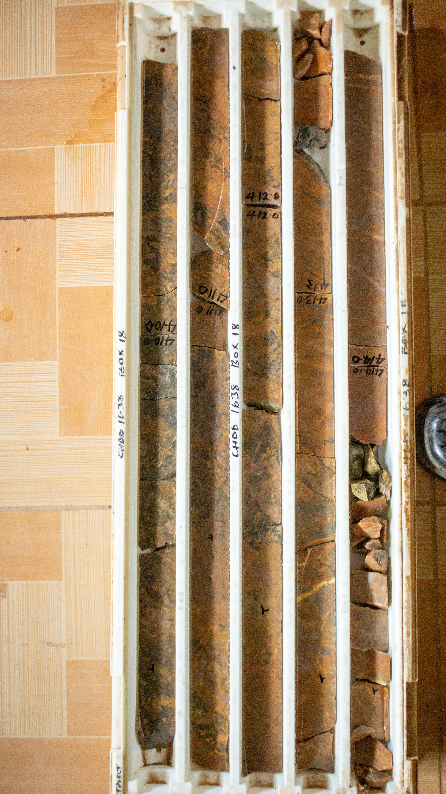
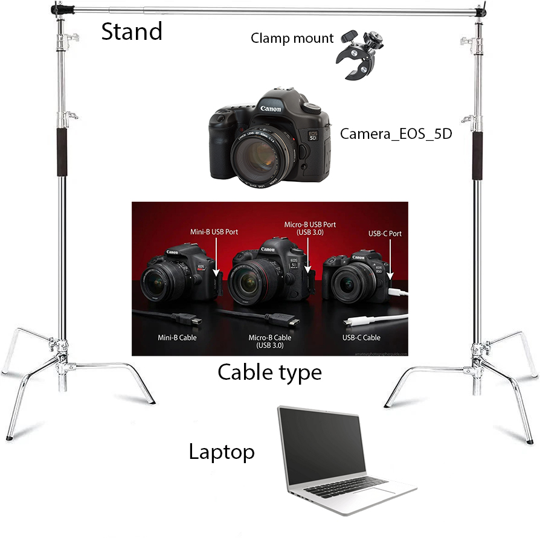
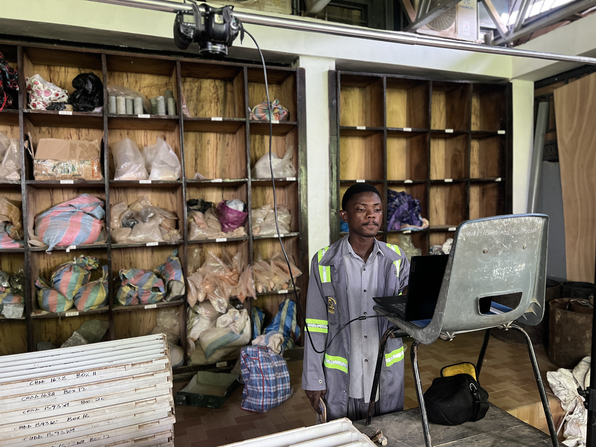
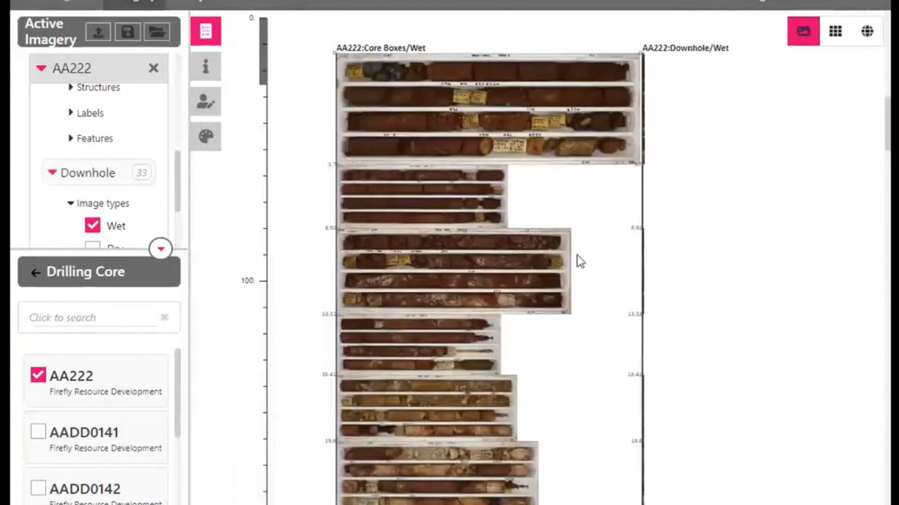
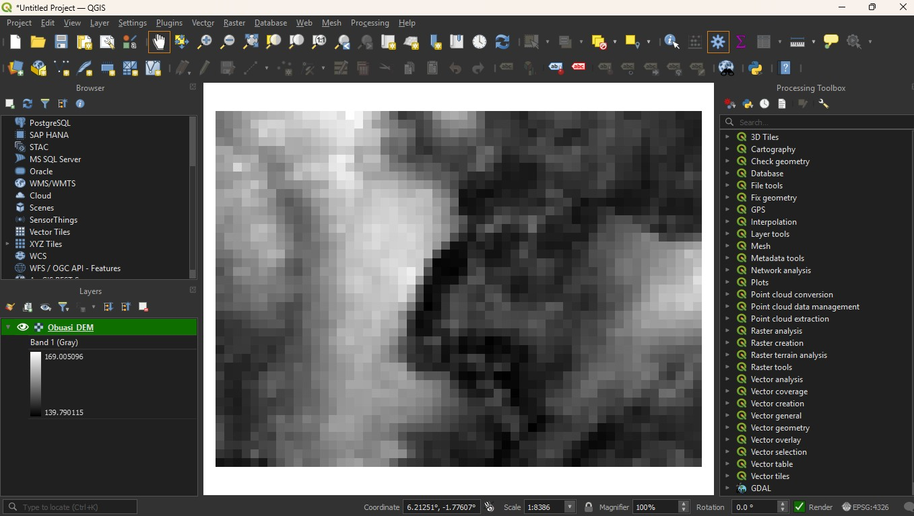
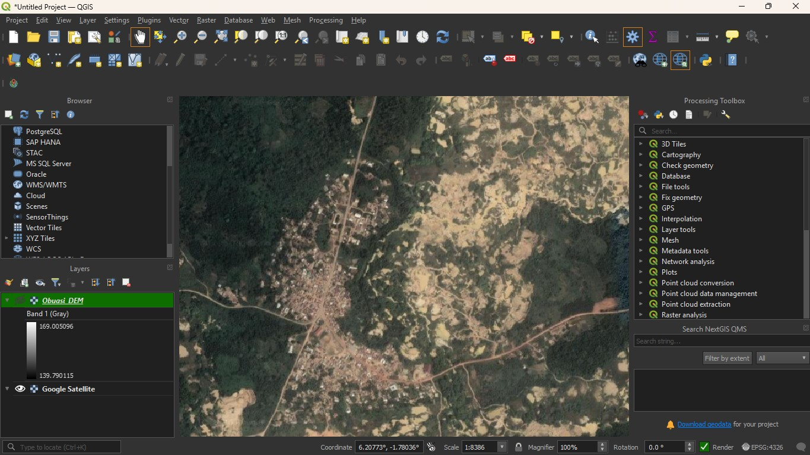
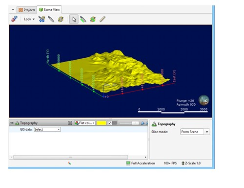
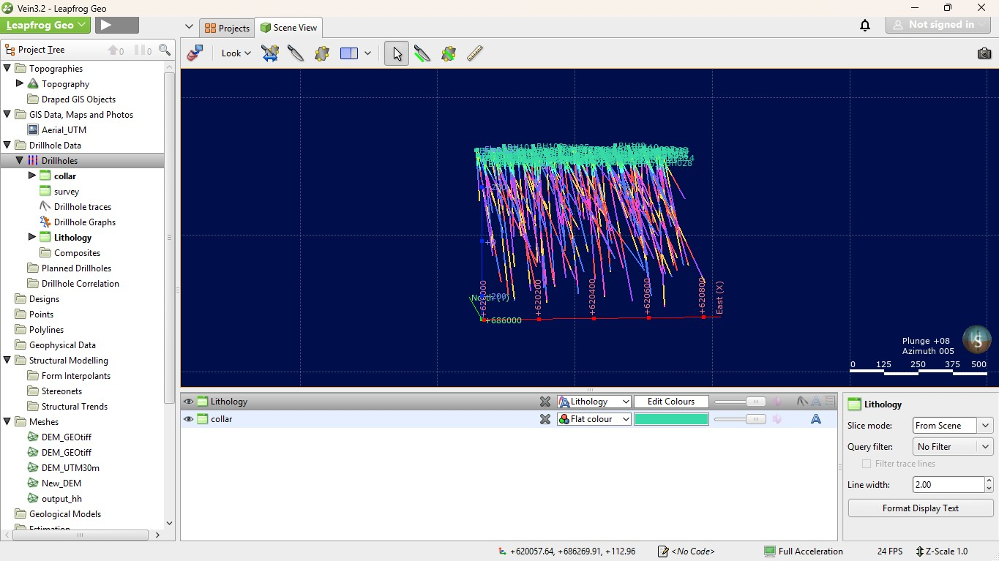
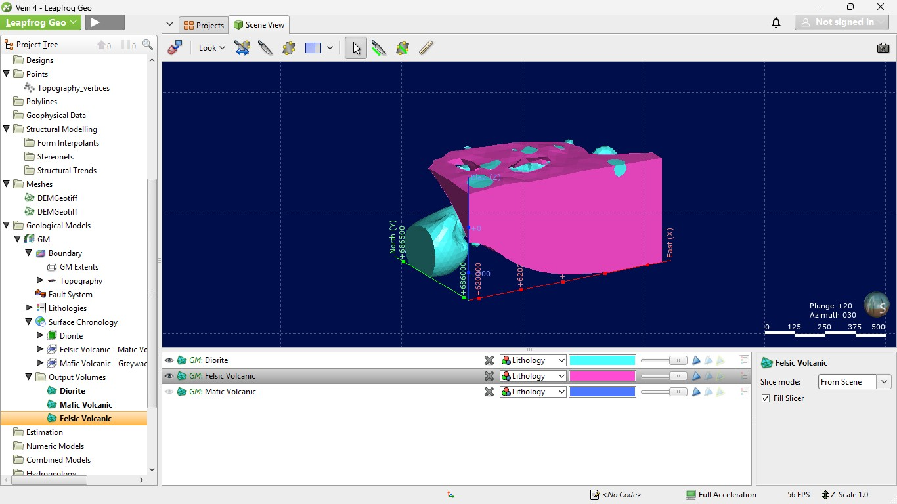

1 Month
Project Duration
5
Software Used
10
Workflow Steps
3D Geological Model
Deliverable
Project Facts
Executive Summary
Project Objectives
- Validate and organize drillhole data.
- Log drill cores using standard geological procedures.
- Produce high-quality drill core photographs.
- Interpret lithological and geological units.
- Prepare geological data for Leapfrog Geo.
- Develop a three-dimensional geological model.
- Improve understanding of the subsurface geological framework.
Study Area
The study was conducted using drill core data within the Geological Engineering Laboratory of KNUST. Drill cores were logged, photographed, interpreted and prepared for three-dimensional geological modelling using Leapfrog Geo.
Methodology
- Geological logging of drill cores
- Recording lithology, structures and mineralization
- Standardized drill core photography
- Geological database preparation
- Quality assurance and validation
- Construction of geological surfaces
- Three-dimensional geological modelling
Engineering Workflow
Step 1
Drillhole data review and validation
Step 2
Drill core tray preparation
Step 3
Geological core logging
Step 4
Drill core photography
Step 5
Lithological interpretation
Step 6
Data validation
Step 7
DEM preparation in QGIS
Step 8
Topography creation in Leapfrog Geo
Step 9
Drillhole import
Step 10
Geological modelling
Step 11
Final model interpretation
Engineering Workflow Gallery
{kind=link}

Step 1: Core Logging
Drill core trays arranged prior to geological logging.
{kind=link}

Step 2: Camera Setup
Canon EOS 5D mounted on a fixed horizontal frame for standardized drill core photography.
{kind=link}

Step 3: Drill Core Photography
Capturing high-resolution drill core photographs for geological documentation.
{kind=link}

Step 4: Core Management
Organizing and managing geological photographs for digital interpretation and documentation.
{kind=link}

Step 5: DEM Generation
Digital Elevation Model generated in QGIS for terrain representation.
{kind=link}

Step 6: Aerial Photograph
Aerial imagery prepared for integration with topographic data.
{kind=link}

Step 7: Topography Creation
Creating the project topography inside Leapfrog Geo.
{kind=link}

Step 8: Drillhole Import
Importing validated drillhole data into Leapfrog Geo.
{kind=link}

Step 9: Geological Modelling
Developing geological contacts and modelling lithological units.

Step 10: Final Geological Model
Completed three-dimensional geological model developed in Leapfrog Geo, integrating drillhole data, lithological interpretation and geological surfaces for visualization and engineering analysis.
Results
- Successfully completed geological core logging.
- Produced standardized drill core photographs.
- Interpreted lithological units and geological structures.
- Developed a validated geological database.
- Built a three-dimensional geological model.
- Improved understanding of subsurface geology.
Lessons Learned
- Improved geological logging techniques.
- Strengthened geological interpretation skills.
- Developed professional drill core photography workflows.
- Learned practical orebody modelling using Leapfrog Geo.
- Improved geological data management skills.
Software Used
- Leapfrog Geo
- Imago (Workflow Inspiration)
- QGIS
- Microsoft Excel
- Python
Technical Skills Demonstrated
- Core Logging
- Drill Core Photography
- Photogeology
- Geological Interpretation
- Orebody Modelling
- Data Validation
References
Project Report
Download Full Project ReportSoftware Used
Technical Skills
Project Downloads
Download reports, datasets, presentations and project resources.
Related Engineering Projects


Project Videos
Drill Core Photography
High-resolution drill core photography workflow.
Core Management
Organizing and managing drill core photographs.